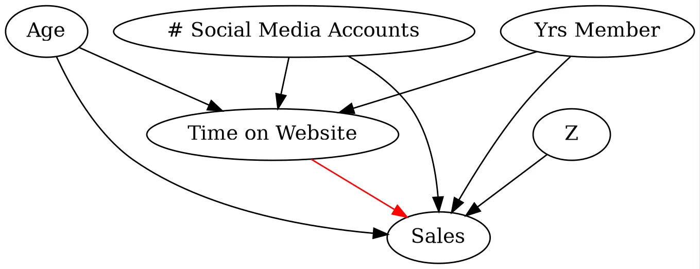

This article is the 2nd in a 2 part series on simplifying and democratizing Double Machine Learning. In the 1st part, we covered the fundamentals of Double Machine Learning, along with two basic causal inference applications. Now, in pt. 2, we will extend this knowledge to turn our causal inference problem into a prediction task, wherein we predict individual level treatment effects to aid in decision making and data-driven targeting
Double Machine Learning, as we learned in part 1 of this series, is a highly flexible partially-linear causal inference method for estimating the average treatment effect (ATE) of a treatment. Specifically, it can be utilized to model highly non-linear confounding relationships in observational data (especially when our set of controls/confounders is of extremely high dimensionality) and/or to reduce the variation in our key outcome in experimental settings. Estimating the ATE is particularly useful in understanding the average impact of a specific treatment, which can be extremely useful for future decision making. However, extrapolating this treatment effect assumes a degree homogeneity in the effect; that is, regardless of the population we roll treatment out to, we anticipate the effect to be similar to the ATE. What if we are limited in the number of individuals who we can target for future rollout and thus want to understand among which subpopulations the treatment was most effective to drive highly effective rollout?
This issue described above concerns estimating treatment effect heterogeneity. That is, how does our treatment effect impact different subsets of the population? Luckily for us, DML provides a powerful framework to do exactly this. Specifically, we can make use of DML to estimate the Conditional Average Treatment Effect (CATE). First, let’s revisit our definition of the ATE, in binary and continuous cases, respectively:
For example, if we wanted to know the treatment effect for males versus females, we can estimate the CATE conditional on the covariate being equal to each subgroup of interest. Note that we can estimate highly aggregated CATEs (i.e., at a male vs. female level), also known as Group Average Treatment Effects (GATEs), or we can allow \(\mathbf{X}\) to take on an extremely high dimensionality and thus closely estimate each individuals treatment effect. You may immediately notice the benefits in being able to do this: we can utilize this information to make highly informed decisions in future targeting of the treatment! Even more notable, we can create a CATE function to make predictions of the treatment effect on previously unexposed individuals!
Note, that there are many models that exist for estimating CATEs, which we’ll cover in a subsequent post. For now, we’ll cover two techniques within the partially linear DML formulation for estimating this CATE function; namely, Linear DML and Non-Parametric DML. Er will show how to estimate the CATE mathematically and then provide examples for each case.
Note: Unbiased estimation of the CATE still requires the exogeneity/CIA/Ignorability assumption to hold as covered in part 1.
Everything demonstrated below can and should be extended to the experimental setting (RCT or A/B Testing), where exogeneity is satisfied by construction, as covered in application 2 of part 1.
Linear DML for Estimating the CATE
Estimating the CATE in the linear DML framework is a simple extension of DML for estimating the ATE:
where \(y\) is our outcome, \(T\) is our treatment, & \(\mathcal{M}_y\) and \(\mathcal{M}_T\) are both flexible ML models (our nuisance functions) to predict \(y\) and \(T\) given confounders and/or controls, \(\mathbf{X}\), respectively. To estimate the CATE function using Linear DML, we can simply include interaction terms of the treatment residuals with our covariates. Observe:
where \(\mathbf{\Omega}\) is the vector of coefficients for the interaction terms. Now our CATE function, call it \(\tau\), takes the form \(\tau(\mathbf{X}) = \beta_1 + \mathbf{X}\mathbf{\Omega}\), where we can predict each individuals CATE given \(\mathbf{X}\). If \(T\) is continuous, this CATE function is for a 1 unit increase in T. Note that \(\tau(\mathbf{X}) = \beta_1\) in eq. (3) where \(\tau(\mathbf{X})\) is assumed a constant. Let’s take a look at this in action!
First, let’s use the same casual DAG from part 1, where we will be looking at the effect of an individuals time spent on the website on their purchase amount, or sales, in the past month (assuming we observe all confounders).:
Code
# Create a directed graphg = graphviz.Digraph(format="png")# Add nodesnodes = ["Age","# Social Media Accounts","Yrs Member","Time on Website","Sales","Z",][g.node(n) for n in nodes]g.edge("Age", "Time on Website")g.edge("# Social Media Accounts", "Time on Website")g.edge("Yrs Member", "Time on Website")g.edge("Age", "Sales")g.edge("# Social Media Accounts", "Sales")g.edge("Yrs Member", "Sales")g.edge("Time on Website", "Sales", color="red")g.edge("Z", "Sales")g.graph_attr["dpi"] ="200"# Render for printg.render("data/dag1", format="webp")

Let’s then simulate this DGP using a similar process as utilized in part 1 (note that all values & data are chosen and generated arbitrarily for demonstrative purposes). Observe that we now include interaction terms in the sales DGP to model the CATE, or treatment effect heterogeneity (note that the DGP in part 1 had no treatment effect heterogeneity by construction)
Here we can see that linear DML closely modeled the true DGP for the CATE (see coefficients on interaction terms in sales DGP). Let’s evaluate the performance of our CATE function by comparing the linear DML predictions to the true CATE for a 1 hour increase in time on the spent on the website:
Overall, we have pretty impressive performance! However, the primary limitation in this approach is that we must manually specify the functional form of the CATE function, thus if we are only including linear interaction terms we may not capture the true CATE function. In our example, we simulated the DGP to only have these linear interaction terms and thus the performance is strong by construction, but let’s see what happens when we tweak the DGP for the CATE to be arbitrarily non-linear:
Here we see much degradation in performance. This non-linearity in the CATE function is precisely where Non-Parametric DML can shine!
Non-Parametric DML for Estimating the CATE
Non-Parametric DML goes one step further and allows for another flexible non-parametric ML model to be utilized for learning the CATE function! Let’s take a look at how we can, mathematically, do exactly this. Let \(\tau(\mathbf{X})\) continue to denote our CATE function. Let’s start with defining our error term relative to eq. 3 (note we drop the intercept \(\beta_0\) as this parameter is partialled out in residualization step; we could similarly drop this in the linear DML formulation, but for the sake of simplicity and consistency with part 1, we do not do this):
What does this mean? We can directly learn \(\tau(\mathbf{X})\) with any flexible ML model via minimizing our causal loss function! This amounts to a weighted regression problem with our target and weights, respectively, as:
Take a moment and soak in the elegance of this result… We can directly learn the CATE function & predict an individuals CATE given our residualized outcome, \(y\), and treatment, \(T\)!
Let’s take a look at this in action now. We will reuse the DGP for the non-linear CATE function that was utilized in the example where linear DML performs poorly above. To construct of Non-Parametric DML model, we can run:
Then define the causal loss function as such (note this is just the MSE!):
Here we can see that, although not perfect, the non-parametric DML approach was able to model the non-linearities in the CATE function much better than the linear DML approach. We can of course further improve the performance via tuning our model. Note that we can use explainable AI tools, such as SHAP values, to understand the nature of our treatment effect heterogeneity!
Conclusion
And there you have it! Thank you for taking the time to read through my article. I hope this article has taught you how to go beyond estimating only the ATE & utilize DML to estimate the CATE to further understanding heterogeneity in the treatment effects and drive more causal inference- & data- driven targeting schemes.
As always, I hope you have enjoyed reading this as much as I enjoyed writing it!
I appreciate you reading my post! My posts primarily explore real-world and theoretical applications of econometric and statistical/machine learning techniques, but also whatever I am currently interested in or learning 😁. At the end of the day, I write to learn! I hope to make complex topics slightly more accessible to all.